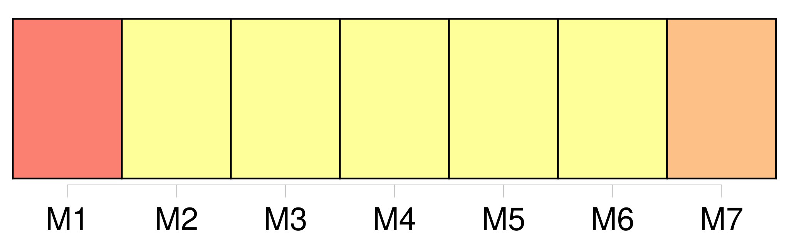
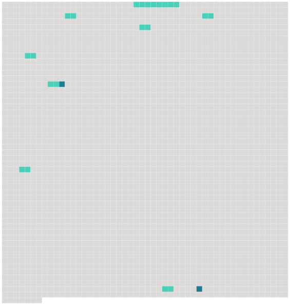

Longueur nb maillons : 10 mentions |
 |
Un maigre feu léchait de ses langues jaunes la plaque de la cheminée, et de temps en temps atteignait le fond d' [un coquemar de fonte pendu à la crémaillère] , et sa faible réverbération allait piquer dans l'ombre une paillette rougeâtre au bord des deux ou trois casseroles attachées au mur. [1 phrases]
Sans la précaution du couvercle il eût plu dans [la marmite] , et l'orage eût allongé le bouillon.
L'eau lentement échauffée avait fini par se mettre à gronder, et [le coquemar] râlait dans le silence comme une personne asthmatique : quelques feuilles de chou, débordant avec l'écume, indiquaient que la portion cultivée du jardin avait été prise à contribution pour ce brouet plus que spartiate. Un vieux chat noir, maigre, pelé comme un manchon hors d'usage et dont le poil tombé laissait voir par places la peau bleuâtre, était assis sur son derrière aussi près du feu que cela était possible sans se griller les moustaches, et fixait sur [la marmite] ses prunelles vertes traversées d'une pupille en forme d'I avec un air de surveillance intéressée. [4 phrases] [La marmite] bouillait toujours, et le chat restait immobile à son poste, comme une sentinelle qu'on a oublié de relever. [3 phrases]
» [15 phrases]
Béelzébuth, accroupi dans la cendre, en face de lui, d'un air famélique et piteux, suivait avec une attention profonde le bouillonnement asthmatique de [la marmite] [27 phrases] Celui -ci détacha [la marmite] de la crémaillère, [en] versa le contenu sur son pain taillé d'avance dans une écuelle de terre commune qu'il posa devant le Baron ; c'était ce potage vulgaire qu'on mange encore en Gascogne, sous le nom de garbure ; puis il tira de l'armoire un bloc de miasson tremblant sur une serviette saupoudrée de farine de maïs et l'apporta sur la table avec la planchette qui la soutenait. |
 |
Il est possible de télécharger la ressource sur la page Ortolang |
Si vous avez des questions ou vous voyez des erreurs, merci d'envoyer un mail à silvia.federzoni89@gmail.com |